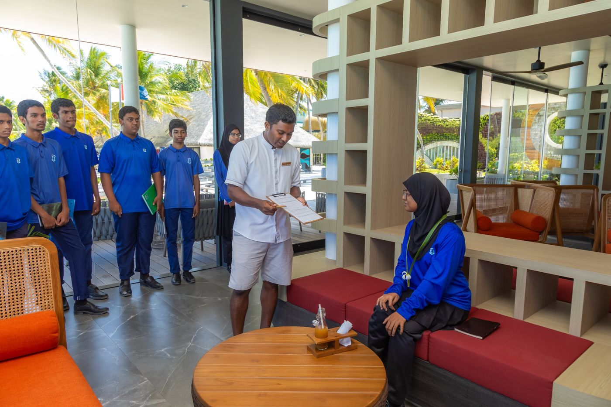
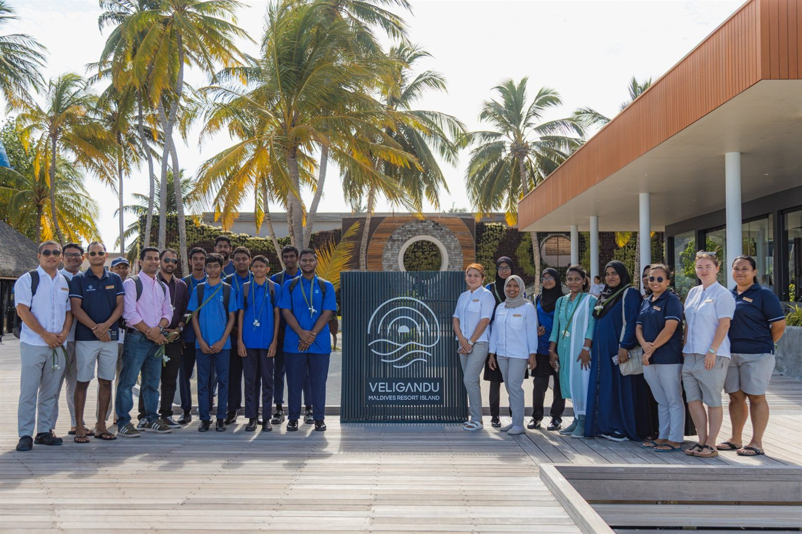
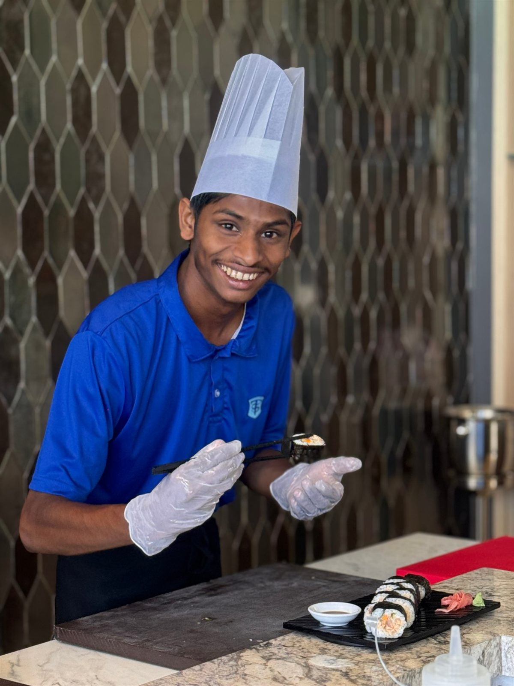
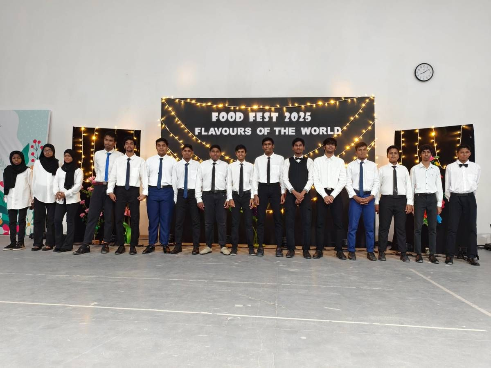

Hospitality education, delivered to international standards.
A career-focused Diploma in Hospitality that combines classroom learning with real practice in professional kitchens, resorts and events across the Maldives.
A recognised qualification for the industry that defines the Maldives.
BTEC is a career-related qualification awarded by Pearson and taught in schools and colleges around the world. Rather than relying on a single final examination, learners demonstrate competence through practical tasks, projects and assignments set in realistic workplace contexts.
The programme covers the hospitality industry, workplace and customer service skills, food preparation and service, front office and accommodation operations, and the planning of hospitality events. Throughout, learners develop the professional behaviours valued by employers and further education providers: teamwork, communication, problem solving and reliability.
No previous experience is required.
Internationally recognised Pearson qualification
Learning applied in professional kitchens and working resorts
A portfolio of evidence that records each learner's achievement
Clear progression to Level 3 study or employment

Front office practice at Veligandu Maldives Resort Island.
Why study with us
Four principles behind the programme
Our approach reflects the expectations of international hospitality employers and the standards set by Pearson.
01
Learning by doing
Skills are taught, practised and assessed in realistic settings, from kitchens to front desks.
02
Industry partnership
Resorts and hospitality businesses open their doors for visits, masterclasses and practical sessions.
03
Professional standards
Health, safety, hygiene and service quality are embedded in every unit.
04
Quality assured
Assessment is internally verified and externally checked by Pearson for consistency.
Curriculum
Programme structure
The Diploma is built from units, each with defined learning aims, an assignment and criteria for Pass, Merit and Distinction. Unit size is measured in guided learning hours (GLH).
Industry foundations
Unit 1Introducing the Hospitality Industry30 GLH
Unit 2Hospitality Workplace Skills30 GLH
Unit 3Customer Service Skills in the Hospitality Industry30 GLH
Unit 4Sustainability in the Hospitality Industry30 GLH
Unit 5Health, Safety and Hygiene in Hospitality30 GLH
Food and beverage
Unit 7Healthy Lifestyles, Foods and Menu Choices
Unit 8Preparing, Cooking and Presenting Food
Unit 9Contemporary World Food
Unit 10Serving Food and Beverages
Unit 16Patisserie and Confectionery
Unit 17Barista Skills
Rooms division
Unit 11Accommodation Services in Hospitality
Unit 12Hospitality Front Office Operations30 GLH
Events and enterprise
Unit 6Planning and Running a Hospitality Event60 GLH
Unit 13Merchandising and Product Promotion in Hospitality
Unit 14Purchasing and Stock Control
Unit 15Enterprise in the Hospitality Industry
Units delivered are selected by the school each academic year. This Pearson specification was first taught in September 2022.
Assessment and quality
Assessed on what learners can do
Assessment follows Pearson's requirements and is designed to reflect how performance is judged in the workplace.
Assignment-based assessment
Learners complete assignments and practical tasks. Selected units use a Pearson Set Assignment, written by Pearson and assessed by the teacher. Evidence includes written work, observation records, photographs, presentations and reflective accounts.
Graded outcomes
PassMeritDistinction
Every unit is graded against published criteria, so learners understand exactly what is required to reach the next level.
Verification and standards
Assignment briefs and assessment decisions are internally verified. Pearson carries out external standards verification, ensuring results are consistent and comparable internationally.
Student experience
Learning in practice
Highlights from recent industry visits, masterclasses and learner-led events.

Industry visit
Resort induction at Veligandu Maldives Resort Island
Learners were welcomed by the resort team with a traditional reception on the jetty, followed by an induction that opened with a welcome from the General Manager. Sessions covered the resort's mission and service culture, before learners moved into the lobby to practise guest arrival and front office procedures with members of staff.
Units: Introducing the Hospitality Industry · Front Office Operations

Culinary masterclass
Japanese cuisine with professional chefs
In a resort teppanyaki kitchen, learners prepared and plated maki rolls under the guidance of the resort's chefs, applying hygiene, knife skills and presentation standards from their food units. The session supports the Contemporary World Food unit and gives learners first-hand experience of a professional service kitchen.
Units: Contemporary World Food · Preparing, Cooking and Presenting Food

Learner-led event
Flavours of the World Food Festival
Since 2024, the school has held its Flavours of the World food festival, planned, prepared and hosted by learners for parents, staff and community guests. Student hosts open the event from the stage, and a buffet of international dishes is presented in sequence, from starters and mains to desserts. The festival brings together the event planning, world food and service skills developed across the programme.
Units: Planning and Running a Hospitality Event · Contemporary World Food · Serving Food and Beverages
Gallery
Moments from the programme
Select a photograph to view it in full.
Learner work
Work by batch
A record of learners' practical work across each batch of the programme. Select a batch to open its photographs and videos.
2020 – 2022 Batch
Practical work and assessment evidence from learners in the 2020 – 2022 batch.
Table serviceTable service
Photographs for this batch will be added soon.
2021 – 2023 Batch
Practical work and assessment evidence from learners in the 2021 – 2023 batch.
Photographs for this batch will be added soon.
2022 – 2024 Batch
Practical work and assessment evidence from learners in the 2022 – 2024 batch.
Photographs for this batch will be added soon.
2023 – 2025 Batch
Practical work and assessment evidence from learners in the 2023 – 2025 batch.
Photographs for this batch will be added soon.
2024 – 2025 Batch
Practical work and assessment evidence from learners in the 2024 – 2025 batch.
Photographs for this batch will be added soon.
2025 – 2026 Batch
Practical work and assessment evidence from learners in the 2025 – 2026 batch.
Photographs for this batch will be added soon.
News and media
In the news
National press coverage of our learners' educational visit to Maldives Inflight Catering in November 2024. Select a clipping to read the full article.
The Level 2 Diploma provides a foundation for further study and entry into the hospitality and tourism sector.
BTEC Level 2 Diploma
Completed at Thoddoo School, building core knowledge and practical competence.
Further study or employment
BTEC International Level 3 in Hospitality, or an entry-level position in a resort or guest house.
Career development
Higher National qualifications in Hospitality Management, or progression to supervisory roles.
Entry-level roles and career areas
Guest service skills are needed wherever people travel, eat, celebrate or relax. These are the areas where learners can start a career working directly with guests.
Resorts and hotels
Welcoming guests, looking after their stay and making every moment personal.
Front office assistant
Guest relations officer
Butler / villa host
Concierge
Reservations agent
Housekeeping attendant
Guest experience host
Stores assistant
Restaurants and cafés
Serving food and drinks to a high standard and creating a memorable dining experience.
Food and beverage attendant
Waiter / server
Restaurant host
Barista
Juice and mocktail attendant
Restaurant supervisor
Events and conferences
Planning and running weddings, celebrations, conferences and official functions.
Event coordinator
Banquet server
Wedding and celebrations assistant
Conference (MICE) assistant
Registration and welcome desk
Protocol and VIP host
Event decor and setup crew
Airport ground handling
Looking after passengers from check-in to boarding, and helping them when plans change.
Passenger service agent
Check-in agent
Boarding gate agent
Transfer and transit desk
Baggage services / lost and found
Special assistance (PRM) agent
Meet and greet / VIP services
Airport lounges
Giving premium travellers a calm, comfortable space with food, drinks and personal service.
Lounge receptionist
Lounge host
Lounge food and beverage attendant
Lounge barista
CIP / VIP lounge agent
Lounge supervisor
Airlines and cabin service
Caring for passengers on board and on the ground, with safety and service in equal measure.
Cabin crew / flight attendant
Airline customer service agent
Ticketing and sales agent
Premium passenger services
Seaplane / domestic flight host
Airline catering
Preparing and presenting meals for thousands of passengers to strict hygiene and timing standards.
Commis chef / production cook
Pastry and bakery cook
Tray setting and meal assembly
Food safety and quality assistant
Special meals coordinator
Catering logistics assistant
Travel and tourism
Helping visitors discover the Maldives, from booking the trip to guiding the excursion.
Tour guide
Excursions coordinator
Travel agent / consultant
Tour operator assistant
Airport resort reception / transfer host
Tourist information officer
Cruise, yacht and liveaboard
Delivering hotel-style service at sea, on cruise ships, safari boats and private yachts.
Cabin steward / stewardess
Liveaboard host
Yacht crew (interior)
Onboard food and beverage attendant
Guest services officer
Spa, wellness and recreation
Helping guests relax and enjoy island life through spa, dive, water sports and activities.
Spa receptionist
Wellness host
Dive centre receptionist
Water sports and activities host
Kids club attendant
Recreation and entertainment team
Guest houses and local tourism
Running welcoming guest houses on local islands like Thoddoo, often as a small business owner.
Guest house receptionist
Guest house manager
Homestay host
Island excursion operator
Café or restaurant owner
Healthcare and corporate hospitality
Bringing hospitality standards to hospitals, offices, embassies and institutions.
Patient services host
Hospital food service assistant
Corporate concierge / front desk
Executive lounge host
Contract catering attendant
Many of these roles are open to school leavers with a Level 2 qualification, while others, such as cabin crew or supervisory roles, may need further training, age requirements or experience. Every one of them depends on the same core skills: communication, teamwork, grooming, food safety and caring for guests.
Alumni
Graduates now working in the industry
Learners who completed the BTEC Hospitality programme at Thoddoo School are building careers in leading Maldivian resorts. Here is what they say about how the course prepared them.
The BTEC Hospitality programme gave me the practical skills and confidence to step straight into a resort restaurant. Learning food and beverage service, teamwork and guest care in real settings prepared me to lead a team today. I am very satisfied with the course and grateful to my teachers.
Our resort visits and practical sessions showed me what working in a Maldivian resort is really like before I started. The service, hygiene and communication skills I learned helped me secure my position at Veligandu. I am very happy with the course and recommend it to anyone starting out.
The course taught me accommodation services, housekeeping standards and how to care for guests with attention to detail. That training helped me gain my role as a Villa Attendant at Bandos Maldives. I am proud of what I achieved and would recommend this programme to anyone who wants a career in hospitality.
Industry engagement
Learning alongside the profession
Leading resorts and hospitality organisations host our learners for visits, inductions and practical sessions, giving them direct insight into international service standards.
FAQ
Common questions
Quick answers for learners and families. For anything else, contact the department.
The Pearson BTEC International Level 2 Diploma in Hospitality, awarded by Pearson in the United Kingdom and recognised internationally.
Do I need previous hospitality experience?
No. The programme starts from the foundations of the industry, and no previous experience is required.
Is there a final exam?
Learners are assessed through assignments, practical tasks and projects rather than a single final examination. Each unit is graded Pass, Merit or Distinction against published criteria.
Will I get practical experience in real resorts?
Yes. Industry partners host learners for visits, inductions, masterclasses and practical sessions in professional kitchens, front offices and resort operations.
What can I do after the Diploma?
Learners can progress to BTEC International Level 3 in Hospitality, or move into entry-level roles such as commis chef, food and beverage attendant, front office assistant or housekeeping attendant.
How can resorts become industry partners?
We welcome visits, masterclasses and practical sessions. Use the enquiry form below and choose "Industry partnership".
Contact
Enquiries and partnerships
For questions about the programme, industry visits or partnership opportunities, please contact the department.